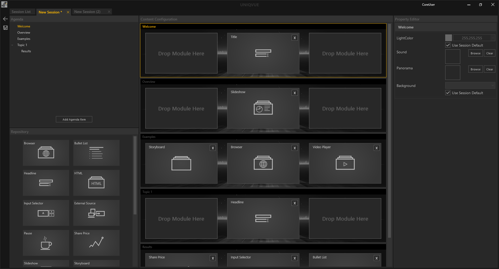

Session Workflow


Mit den konsistenten Bedienelementen, die sich rechts außen am Dokumentenfenster befinden, kann man einfach eine Session bearbeiten, erstellen, duplizieren oder löschen.
Zur Erinnerung noch einmal Icons und ihre Funktion:
- Der Pfeil der nach links zeigt, führt zurück in das Menü von dem aus man gestartet ist.
- Der Stift ist das Symbol, um eine ausgewählte Session zu bearbeiten.
- Das Dokument mit dem Pluszeichen ist zum Erstellen einer neuen Session.
- Der Dokumentenstapel darunter ist zum Duplizieren einer ausgewählten Session.
- Mit dem Mülleimersymbol löscht man eine ausgewählte Session.
Erstellen einer neuen Session:
Sie erstellen eine neue Session durch Klicken auf das Dokument mit dem Pluszeichen. Mit Doppelklick auf den Namen können sie der Session einen Namen geben. Diese Session ist zunächst leer. Sie enthält außer einem Default Style und einer Default Toolbox keine weiteren Inhalte. Das können sie jetzt ändern, indem sie auf den Stift zum Bearbeiten der Session klicken. Alternativ kann die Session, ganz rechts im Inspektor, durch Klicken auf ‘Edit Session’ bearbeitet werden. Beide Vorgänge leitet weiter zum Session Editor. Dieser wird als neuer Tab erzeugt, welcher den Namen der aktuell zu bearbeitenden Session trägt. Beliebig viele Tabs also Sessions können gleichzeitig geöffnet sein. Das Sternsymbol (‘*’) erscheint außerdem im Session Namen, um einen Indikator dafür zu liefern, ob eine Session noch ungespeicherte Änderungen enthält.
Der Session Editor besteht aus vier Bereichen:
- Agenda Tree: Dieser zeigt die Struktur der Agenda als hierarchischen Baum.
- Agenda Modul Repository: Enthält alle verfügbaren Module wie Slideshows etc.
- Agenda Item Editor: Repräsentiert die Platzierung von Modulen auf dem Display Setup
- Property Editor: Hier werden Assets mit den Modulen verknüpft. (Bilderordner -> Slidehow)
Eine Agenda Anlegen:
Im Agenda Tree füllen sie nun ihre Agenda mit Punkten. Um einen neuen Punkt in der Hierarchie zu erstellen, drücken sie den Button ‘Add Agenda Item’. Durch Doppelklick auf den Namen des neu erstellten Agenda-Punktes, kann dieser geändert werden. Im Agenda Item Editor erscheint nun ein neues Element, welches das Display Setup des Showrooms repräsentiert. Unter einem Agenda-Punkt können sie zudem weitere Agenda-Unterpunkte erzeugen. Im Agenda Tree werden Unterpunkte eingerückt dargestellt.
Die Agenda mit Modulen füllen:
Ziehen sie aus dem Agenda Repository Module ihrer Wahl per Drag and Drop in ein Element im Agenda Item Editor. Entsprechend des Display Setups können Module innerhalb des Elements platziert werden. So können mehrere Module auf verschiedene Displays verteilt sein. Füllen sie so ihre gesamte Agenda.
Module mit Inhalten füllen:
Klicken sie auf ein Modul innerhalb des Agenda Item Editor. Der Property Editor am rechten Rand zeigt ihnen entsprechend des Moduls dessen Eigenschaften an. In Kapitel Modul sind alle Eigenschaften jedes Moduls detailliert erläutert. Durch Klicken auf eine Eigenschaft öffnet sich der Asset Browser. Importieren sie Bilder, HMTL-Dateien, Videos und viele andere Inhalte und wählen sie diese aus. Wie der Asset Browser genauer funktioniert, lesen sie in Kapitel Asset Browser.
Speichern:
Ist die Agenda nach ihren Wünschen gefüllt muss diese gespeichert werden. Wie erwähnt zeigt das Sternsymbol im Tab (‘*’) an, ob es ungespeicherte Änderungen gibt. Durch klicken auf das Diskettensymbol oder Drücken der Tastenkombination STRG + S wird die Agenda gespeichert.
Eine Toolbox und einen Style der Session zuweisen:
Nach dem Speichern navigieren sie zurück in die Session Liste. Der Listeneintrag einer jeden Session enthält die Spalte ‘Toolbox’ und ‘Style’. Die Standardauswahl ist immer ‘Default Style’ und ‘Default Toolbox’. Durch Klicken auf diese, können sie aus einer Liste von Styles oder Toolboxes auswählen, die sie zuvor erstellt haben. In Kapitel Toolbox Workflow und Style Workflow gibt es eine detaillierte Beschreibung dazu.
Sessions organisieren und freigeben:
Vergeben sie in der Spalte ‘Category’ ihrer Session eine Kategorie. Durch Setzen des Hakens bei ‘Released’ wird die Session im Showroom Dashboard innerhalb eines Ordners, der den Namen der Kategorie trägt, verfügbar gemacht. In Kapitel Showroom wird u.a. erläutert, wie sie Sessions laden können.